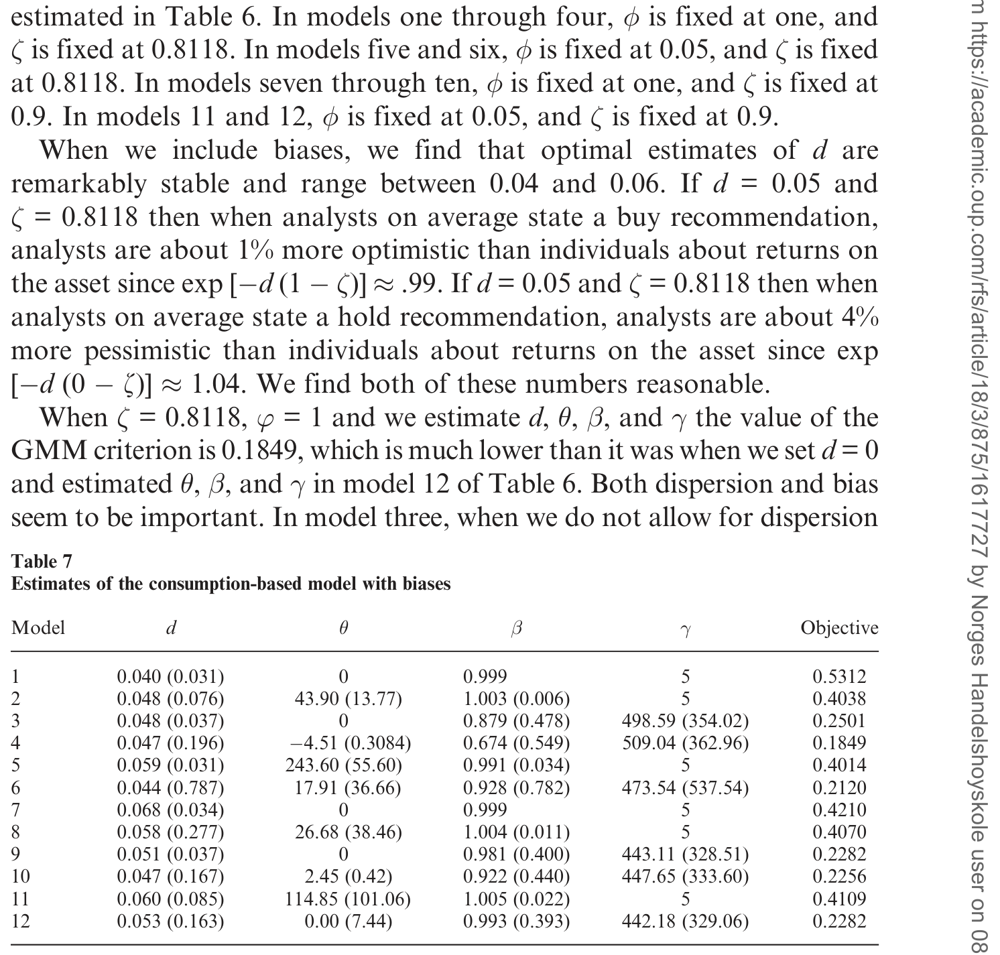
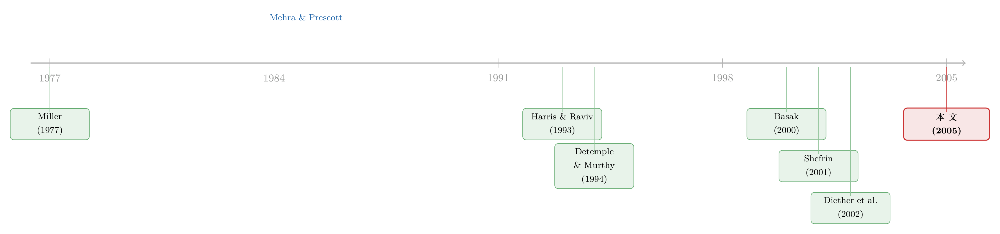

众人各执一词，价格却只听一个人的吗？
本文读的是 Anderson, Ghysels & Juergens (2005, Review of Financial Studies)：他们把「分析师对盈利的分歧」当作投资者异质信念 (heterogeneous beliefs) 的代理变量，先证明这种分歧是一个定价因子，再把它装进一个消费基础 (consumption-based) 的随机贴现因子模型，最后用它去啃股权溢价之类的老谜题。核心结论只有一句：分歧并不会在加总中干净地消失——它对预期收益有真实的、可定价的影响。
1 一个被「平均掉」的世界
资产定价的教科书里，住着一个非常孤独的人:代表性投资者 (representative agent)。他一个人消费、一个人持有全部资产、一个人为整个市场定价。我们当然知道现实里没有这个人——真实世界里有看多的、有看空的，有用 DCF 的、有看 K 线的，有刚读完研报就改主意的、也有抱着十年前的偏见不撒手的。可一旦要写模型，我们几乎总是把这群人「平均」成一个，然后假装分歧从未存在。
为什么？作者在开篇给了三条理由，每一条都很诚实。第一，异质投资者模型往往推不出可检验的预测；第二，反映个体信念、禀赋、消费的数据稀少且质量存疑；第三——也是最致命的一条——在很多最好用的设定里，异质投资者模型与代表性投资者模型观测等价。比如当偏好满足 Gorman 加总 (Gorman 1953) 时，就存在一个与个体同型的代表性投资者，你根本不需要显式地去管那群人。
于是一个自然的、也是有点扎心的问题浮出水面:如果异质信念终归会在加总里被平均掉，那它到底还重不重要？
这篇论文就是冲着这个问题来的。它的回答是:重要——但重要的方式，比你直觉以为的要微妙得多。
2 先解决「没有数据」这件事
要谈异质信念，第一道坎是上面说的「第二条」:你拿什么去测量分歧？个体投资者脑子里的概率分布，没人观测得到。
作者的办法很巧:用财务分析师 (financial analysts) 公开发布的盈利预测，作为投资者信念的代理。分析师对同一只股票的盈利各报各的数，那么这些预测之间的离散度 (dispersion)——用月末预测的标准差来度量——就是一个现成的、按月更新的、覆盖全市场的「分歧温度计」。他们同时构造了两个版本:对短期盈利的分歧，和对长期盈利增长的分歧。
这里有个常被忽略的身份问题:分析师是不是市场投资者的随机样本？显然不是。所以作者在模型里专门留了一个参数，去刻画「投资者的信念在多大程度上等同于分析师的预测」，必要时还可以在二者之间打入一个楔子。这一点在后面的结构估计里会变得很关键。
有了温度计，作者兵分两路。第一路是约简式 (reduced-form) 的:把分歧造成一个因子，看它在传统资产定价模型里是不是被「定了价」。第二路是结构式 (structural) 的:直接估计一个把分析师信念嵌进去的消费基础定价方程。
两条路指向同一个核心:分歧是不是一个真实的价格驱动者。
值得强调的一点是:与 size、book-to-market、动量这些「先有经验规律、后被追认成因子」的家伙不同，作者的「分歧被定价」这个假设，是从一个理论模型里推出来的，而不是数据里挖出来的。这让整件事的性质完全不同——它不是又一只闯进「因子动物园」的野兽，而是一个有微观基础的预测。
3 模型:一个有分歧、却仍有代表性投资者的经济
这是全文的脊梁，值得一步步走。
设定。 经济里有 \(I\) 类投资者，活无穷期，偏好完全相同——都是相对风险厌恶系数为 \(\gamma\) 的幂效用——但信念不同。第 \(i\) 类投资者的终身效用为
$$\sum_{t=0}^{\infty}\beta^{t}\,E_{it}\,\frac{c_{it}^{\,1-\gamma}}{1-\gamma}$$
其中 \(\beta\) 是时间贴现因子，\(E_{it}\) 是用第 \(i\) 类投资者自己的信念取的期望，\(c_{it}\) 是其当期消费。每期他可以消费，也可以投资于 \(n\) 种资产之一，预算约束为
$$c_{it}+\sum_{p=1}^{n}\varphi_{ipt}=w_{it}+\sum_{p=1}^{n}\varphi_{ipt-1}\,r_{pt}$$
\(\varphi_{ipt}\) 是投在资产 \(p\) 上的金额，\(w_{it}\) 是劳动收入，\(r_{pt}\) 是含红利的总实际收益。
第一步:个体的欧拉方程。 对每一类投资者，最优化给出熟悉的消费基础定价式
$$1=E_{it}\!\left[\beta\left(\frac{c_{it}}{c_{it+1}}\right)^{\gamma}r_{pt+1}\right]$$
注意这条式子对任意一个投资者、用他自己的信念和消费都成立。问题是,我们既看不到单个投资者的消费，也看不到他完整的信念分布。
第二步:加总成「代表性」的形式。 作者引入帕累托权重 (Pareto weights) \(\lambda_{it}\) 来度量第 \(i\) 类投资者的重要性（与其财富相关，且每期加总为一），并施加「分布不随时间变化」(Assumption 1) 这个简化。于是个体的欧拉方程可以加总成一条只含总量消费的定价式:
$$1=\sum_{i=1}^{I}\lambda_{it}\,E_{it}\!\left[\beta\left(\frac{c_{t}}{c_{t+1}}\right)^{\gamma}r_{pt+1}\right]$$
这条式子（Detemple-Murthy、Basak、Shefrin 都研究过的类似形式）告诉我们一件意味深长的事:证券价格，是「假如所有人意见一致时」各自会得出的价格，按帕累托权重做的一个加权平均。 换句话说——是的，这个经济里存在一个代表性投资者，他的信念是个体信念的某种复合。
那分歧不就被平均掉了吗？这正是悬念所在。
第三步:把信念分布接到数据上。 作者只观测得到各投资者对条件均值的预测（分析师的点预测），观测不到完整分布。为了补全，他们提出 同伦假设 (Homotopy, Assumption 2):一个投资者若对条件均值更乐观，他就在「全局」意义上更乐观——他感知到的整条分布，是真实分布按 \(\mu_{xt+1|t}/\mu_{xit+1|t}\) 做的同向平移缩放。这个假设有个漂亮的副产品:只要一个投资者对均值判断正确，他对整条分布的判断就都正确，而且所有投资者都正确地知道二阶及更高阶的中心矩。于是「全分布的异质」被压缩成了「均值的异质」,可估计了。
第四步——也是真正关键的一步:把收益拆成两块。 令 \(g_{t+1}=c_{t+1}/c_{t}\) 为总量消费增长率。利用上面的假设，定价式可以一路改写为
$$1=\beta\,h_{pt}\,E_{t}\!\left[g_{t+1}^{-\gamma}\,r_{pt+1}\right]$$
这就是全文的题眼。它长这样:
这里的异质性成分 \(h_{pt}\) 写出来是
$$h_{pt}=\sum_{j=1}^{I}\lambda_{jt}\left(\frac{\mu_{gjt+1|t}}{\mu_{gt+1|t}}\right)^{-\gamma}\left(\frac{\mu_{pjt+1|t}}{\mu_{pt+1|t}}\right)$$
它衡量的是:各投资者对消费增长的预测偏离与对资产收益的预测偏离，如何交织在一起。注意 \(h_{pt}\) 逐资产变化——不同股票，分歧对它的影响不一样。
第五步:落到预期收益上。 用恒等式 \(E_t xy=E_t x\,E_t y+\mathrm{cov}_t(x,y)\) 整理，资产的预期收益终于裂成两半:
$$E_{t}r_{pt+1}=\underbrace{\Lambda_{t}\,\frac{-\mathrm{cov}_{t}\!\left(g_{t+1}^{-\gamma},\,r_{pt+1}\right)}{E_{t}g_{t+1}^{-\gamma}\,h_{pt}}}_{\text{Fundamental}}+\underbrace{\Lambda_{t}\,\frac{1-h_{pt}}{h_{pt}}}_{\text{Heterogeneity}}$$
其中 \(\Lambda_{t}=\dfrac{1}{\beta\,E_{t}g_{t+1}^{-\gamma}}\) 是「假如所有人意见一致」时的无风险利率。当 \(h_{pt}=1\)（无分歧），异质性那一块归零，整条式子退回标准的消费 CAPM。一旦 \(h_{pt}\neq 1\)，分歧就开始在预期收益里说话了。
于是悬念有了答案:代表性投资者确实存在，但个体信念里仍藏着对定价有用的信息——它没有被平均掉，而是浓缩进了 \(h_{pt}\) 这个会因资产而异的乘数里。
4 那个最精巧的「刀刃」
到这里你可能会反问:既然式 (5) 说价格是「众人意见一致时价格」的加权平均，那加权平均不就把分歧抹平了吗？为什么 \(h_{pt}\) 还会偏离 1？
这正是全文最漂亮、也最反直觉的一步。作者在第 2 节假设经济作为整体「平均而言是对的」:对消费增长和对任意股票收益的条件均值，加权平均后等于真值,
$$\mu_{gt+1|t}=\sum_{i=1}^{I}\lambda_{it}\,\mu_{git+1|t},\qquad \mu_{pt+1|t}=\sum_{i=1}^{I}\lambda_{it}\,\mu_{pit+1|t}$$
关键洞见来了。把 \(h_{pt}\) 再拆一层（把帕累托权重当成概率、\(\hat E_t\) 与 \(\widehat{\mathrm{cov}}_t\) 是在这套「虚拟概率」下的期望与协方差）:
$$h_{pt}=\hat E_t\!\left[\left(\frac{\mu_{gjt+1|t}}{\mu_{gt+1|t}}\right)^{-\gamma}\right]+\widehat{\mathrm{cov}}_t\!\left(\left(\frac{\mu_{gjt+1|t}}{\mu_{gt+1|t}}\right)^{-\gamma},\,\frac{\mu_{pjt+1|t}}{\mu_{pt+1|t}}\right)$$
读懂这条式子，就读懂了整篇文章。它说的是:
- 对复合变量 \(g_{t+1}^{-\gamma}r_{pt+1}\)（也就是随机贴现因子乘以收益）的分歧，不重要——因为价格只取它的均值。
- 但对 \(g\) 和 \(r\) 各自的分歧，重要——它们通过最后那个协方差（共同离散度，co-dispersion）项进入 \(h_{pt}\)。哪怕 \(\mu_{gj}^{-\gamma}\) 的均值和 \(\mu_{pj}\) 的均值都钉住不动，只要这两种分歧一起涨落，\(h_{pt}\) 就会动，价格就会变。
这是一道精巧的刀刃。作者由此论证:他们的经济拥有一种有限的理性预期 (limited rational expectations)——投资者整体对「资产收益」「消费增长」这类简单变量有理性预期，却对「进入定价核的那个复杂乘积」可能有非理性预期。这种「对简单量不偏、对复杂量会偏」的设定，恰恰呼应了行为金融里 Simon (1955)、Tversky & Kahneman (1974) 的启发式简化思想，也是 Hirshleifer (2001) 所说「偏差是启发式简化的产物」的一个干净刻画。
一句话:分歧之所以能被定价，不是因为大家对结果看法不同，而是因为大家对「输入」的分歧彼此相关。
5 数据与两路实证
测量端，作者用的是 First Call/Thomson 提供的分析师盈利预测数据（短期 EPS 与长期增长率），把同一只股票月末预测的标准差作为离散度，进而构造短期与长期两个离散度因子；再据分析师的盈利预测反推构造预期收益，作为结构定价方程的输入。
约简式那一路问的是:把离散度因子塞进标准模型，它有没有解释力？作者的回答是肯定的——由分析师对（短期与长期）盈利分歧构造出来的因子，在资产定价模型里具有解释力。更有意思的是收益波动率那一块:仿照 Chan, Karceski & Lakonishok (1999) 的做法去预测波动率，他们发现简单模型、尤其是只含离散度因子的模型，预测误差更低、样本性质更好，反而胜过繁复的多因子模型。换句话说，分歧不只预测收益，还预测风险。
结构式那一路才是重头戏。作者把第 3—5 节的模型——包括同伦假设、消费增长信念与市场收益预测之间的桥（Assumption 3）、以及第 5 节引入的「放大 (amplification)」与「偏差 (bias)」——一并用广义矩估计 (generalized method of moments, GMM) 拿去对数据。如表 7 所示，这套消费基础模型的全部结构参数（贴现因子、风险厌恶 \(\gamma\)、连接消费信念与市场预测的 \(\phi\)，以及刻画放大与偏差的参数）被一并估出。

Table 7: provides estimates of the consumption-based model when there
这里有个理论锚点值得记住:在模型的一般均衡版本里，连接消费增长信念与市场收益预测的弹性 \(\phi\) 应当等于 1。作者在实证里尝试了不同的 \(\phi\) 取值，这就给「分析师预期能多大程度代表投资者真实信念」提供了一个可以对照的标尺。
最后，作者把这套带分歧的定价核拿去对资产定价之谜——分歧的存在，能否帮我们理解诸如股权溢价 (Mehra & Prescott 1985) 这类老大难。逻辑上是通的:异质性成分 \(h_{pt}\) 给随机贴现因子额外增添了波动来源，而我们早就从 Hansen-Jagannathan 边界知道，谜题的本质正是「SDF 波动得不够」。分歧，恰好是一台天然的波动放大器。
6 文献脉络
把这条线捋直了看，会更清楚这篇论文站在哪。
最早的源头是 Miller (1977)——「风险、不确定性与意见分歧」。但要注意，Miller 的机制和本文完全不同:Miller 靠的是卖空约束,当意见分歧大、悲观者无法做空时，价格被乐观者推高，于是分歧预示未来低收益（这条经验含义后来被 Diether, Malloy & Scherbina (2002) 做实，也是后来无数「分歧之谜」文献的起点）。而本文里没有摩擦、市场完备——分歧之所以被定价，是一个纯理性、有微观基础的结果，不靠卖空约束。这是两套世界观。
接着，一支「异质信念下的均衡资产定价」理论传统逐渐成型:Williams (1977)、Abel (1989)、Detemple & Murthy (1994)、Zapatero (1998)、Basak (2000)、Li (1999) 一路把分歧写进连续时间或完备市场的定价核里。Harris & Raviv (1993)「分歧让赛马更好看」则从交易量一侧呼应。

与本文几乎同时、且最为相近的是 Shefrin (2001)——他同样在定价核框架里分析交易者的「情绪 (sentiment)」如何影响 SDF。作者很坦诚地交代了优先权:本文是 Ghysels & Juergens (2001) 的大幅修订版，Shefrin 的设定更一般（不强加 Assumption 1、2），而本文为了能落到数据上做了更具体的假设。
方法论的另一条根，是消费基础定价的实证传统:Hansen & Singleton (1982) 的 GMM、Hansen & Jagannathan (1991) 的边界、以及 Mehra & Prescott (1985) 抛出的股权溢价之谜——本文末尾正是要回到这道谜题上。
把本文放进这张地图:它是第一批同时做到「用真实分歧数据 + 结构定价核 + 谜题检验」三件事的论文之一。关于「分歧到底是不是一回事、还是其实是别的东西在动」这个更晚近的争论，可参见《分歧本身没那么重要，重要的是「信息质量」在变》；而关于分析师预期误差能在多大程度上「吃掉」各种异象，则可参见《不需要那些「玄学风险」》。本文用异质性去解释谜题，和《算不准均值的那群人，悄悄退出了股市》用模型不确定性去解释谜题，恰是同一棵树上长出的两支。
7 评论与延伸（Q&A + 研究方向）
(a) 几个可能的疑问
Q：用分析师分歧代理「投资者异质信念」，靠谱吗？分析师又不是市场的随机样本。
这是最该警惕的地方，作者自己也承认。他们的应对是在模型里显式留出参数，去刻画投资者信念与分析师预测之间的距离（甚至允许打入楔子），并在第 5 节引入「放大」与「偏差」。但本质上,这是一个代理变量假设,而非可被直接检验的等式——若分析师因承销关系、羊群、乐观偏误而系统性地偏离普通投资者，估计就会被污染。这是全文识别上最软的一环。
Q：这篇和「分歧预示低收益」(Diether et al. 2002) 是一回事吗？
不是，甚至机制相反。Diether 那一系是 Miller (1977) 的卖空约束世界:分歧→乐观者主导→高价→低未来收益，是一种错误定价。本文是无摩擦完备市场:分歧通过 \(h_{pt}\) 进入理性定价核，符号方向取决于风险厌恶 \(\gamma\) 与共同离散度的协方差，而非单调的「越分歧越贵」。把两者混为一谈，是读这篇文章最常见的误区。
Q：既然存在代表性投资者，分歧凭什么没被平均掉？
因为「平均掉」的只是对复合变量 \(g^{-\gamma}r\) 的分歧；对 \(g\) 和 \(r\) 各自的分歧，会通过式 (18) 里那个共同离散度协方差项幸存下来。这是全文的刀刃:代表性投资者的存在，并不等于个体信息的湮灭。
Q：Assumption 1（分布不变）和 Assumption 2（同伦）是不是太强了？
是简化，但作者讲清了代价。Assumption 1 在 \(\gamma\approx 1\)、经济接近不变分布、信念差异不太大时近似成立（\(\gamma=1\) 时严格成立）；他们也承认数据并不精确满足它。Assumption 2 把「全分布异质」压成「均值异质」，副产品是「均值对则全分布对」。Shefrin (2001) 不施加这两条、走更一般的路——本文是拿一部分一般性，换来了可估计性。
Q：这能「解释」股权溢价之谜吗，还是只是多塞了一个自由参数？
诚实地说，机制是对的（分歧给 SDF 添了波动，正中 Hansen-Jagannathan 边界的要害），但「能解释多少」取决于估出来的离散度有多大、\(\gamma\) 有多高。这类结构模型的通病是:拟合好不等于机制真——同样的矩，换一组参数也凑得出。所以它更像是「分歧是谜题的一个可信候选来源」，而非「谜题已被分歧解决」。
Q：为什么离散度还能预测波动率，而且简单模型反而更好？
直觉上，今天分歧大，意味着信息环境更嘈杂、未来现金流的不确定也更大，于是波动更高。作者仿 Chan-Karceski-Lakonishok (1999) 发现只含离散度的简单模型样本外更稳——这其实是「少即是多」的老道理:复杂多因子模型在样本内更贴合，样本外却被参数估计噪声拖累。
(b) 几个可能的研究问题与提案
1. 把这套「异质信念定价核」搬到公司债市场。 【经济故事】债券现金流封顶、违约时归零，对坏尾巴的分歧远比对均值的分歧重要;而分析师/卖方对信用的分歧（评级分歧、CDS 报价离散）正是天然的 \(h_{pt}\) 输入。股票里被平均掉的东西，在债券的凸性下未必平均得掉。 【可行性】中。数据有 TRACE、Markit CDS、评级分歧;识别上可借本文的 GMM 结构，但要把幂效用换成对违约敏感的设定，工程量不小。
2. 外资 vs. 本土投资者的「信念楔子」。 【经济故事】本文留了「投资者信念≠分析师预测」的楔子却没细究它从哪来。一个自然的来源是投资者构成:外资与本土对同一现金流的分歧结构不同（信息、汇率、母国偏见）。能不能用持有人结构去预测 \(h_{pt}\) 的截面差异？ 【可行性】中。需要 13F／各国托管持仓 + 分析师分歧;识别可用指数纳入这类对外资准入的外生冲击做事件研究。
3. 共同离散度（co-dispersion）的可交易版本。 【经济故事】本文理论的题眼是「\(g\) 的分歧与 \(r\) 的分歧一起动才定价」。那么一个直接做空高共同离散度、做多低共同离散度的组合，应不应该挣到溢价？这是对式 (18) 最干净的一次正面检验。 【可行性】高。只需分析师分歧 + 宏观（消费）预测分歧（如 SPF）做月度共同离散度;难点是消费增长信念的代理，但可用专业预测者调查替代。
4. 用市场价格反推信念，再回检本文的代理。 【经济故事】与其假设「分析师=投资者」，不如从期权/价格里反推市场隐含的信念分布，再看它和分析师分歧差多远——直接量化本文那道楔子的宽度。 【可行性】中。期权隐含分布的方法成熟，但「分歧」需要横截面或多代理结构，单资产期权只给得出复合分布。
8 我的判断
这篇论文的贡献，我愿意给得很实在:它在 2005 年就同时做到了三件不容易的事——给「异质信念」找了一个可观测的代理（分析师分歧）、把它写进一个有微观基础的定价核、再拿去对真实数据和经典谜题。最让我欣赏的是第 4 节那道刀刃:在一个存在代表性投资者、整体又「平均正确」的经济里，把「哪种分歧会被定价、哪种不会」分得清清楚楚——答案是对 SDF 的分歧无关、对其组成部分的共同离散度有关。这是一个真正的理论洞见，而不是又一只因子动物园里的新物种。
但识别上的担忧也很清楚，且都集中在一个点上:整座大厦压在「分析师分歧能代表投资者异质信念」这块基石上。 分析师有承销利益冲突 (Michaely & Womack 1999)、有系统性乐观、有羊群——这些都会让代理变量偏离它该代表的东西。Assumption 1、2 是为可估计性付的税，作者很诚实地标了价，但读者要心里有数:结论的强度，不会超过这些假设的强度。
后续我最想看到的，是把这套框架搬出股票、搬进信用与外资:债券的非线性现金流让「对尾部的分歧」无法被均值平均掉，外资/本土的信念结构又给那道楔子提供了一个有外生冲击的来源。如果共同离散度真的是一个可交易、跨资产稳健的定价维度，那本文埋下的，就不止是一篇 2005 年的好文章，而是一条还没走完的路。
参考文献
- Abel, A. B. (1989). Asset Prices under Heterogeneous Beliefs: Implications for the Equity Premium. mimeo, University of Pennsylvania.
- Anderson, E. W., Ghysels, E., & Juergens, J. L. (2005). Do Heterogeneous Beliefs Matter for Asset Pricing? Review of Financial Studies 18(3), 875–924.
- Basak, S. (2000). A Model of Dynamic Equilibrium Asset Pricing with Heterogeneous Beliefs and Extraneous Risk. Journal of Economic Dynamics and Control 24, 63–95.
- Chan, L. K. C., Karceski, J., & Lakonishok, J. (1999). On Portfolio Optimization: Forecasting Covariances and Choosing the Risk Model. Review of Financial Studies 12, 937–974.
- Detemple, J., & Murthy, S. (1994). Intertemporal Asset Pricing with Heterogeneous Information. Journal of Economic Theory 62, 294–320.
- Diether, K. B., Malloy, C. J., & Scherbina, A. (2002). Differences of Opinion and the Cross-Section of Stock Returns. Journal of Finance 57, 2113–2141.
- Ghysels, E., & Juergens, J. L. (2001). Stock Market Fundamentals and Heterogeneity of Beliefs: Tests Based on a Decomposition of Returns and Volatility. SSRN working paper.
- Gorman, W. (1953). Community Preference Fields. Econometrica 21, 63–80.
- Hansen, L. P., & Jagannathan, R. (1991). Implications of Security Market Data for Models of Dynamic Economies. Journal of Political Economy 99, 225–262.
- Hansen, L. P., & Singleton, K. J. (1982). Generalized Instrumental Variables Estimation of Nonlinear Rational Expectation Models. Econometrica 50, 1269–1286.
- Harris, M., & Raviv, A. (1993). Differences of Opinion Make a Horse Race. Review of Financial Studies 6, 473–506.
- Hirshleifer, D. (2001). Investor Psychology and Asset Pricing. Journal of Finance 64, 1533–1597.
- Mehra, R., & Prescott, E. C. (1985). The Equity Premium: A Puzzle. Journal of Monetary Economics 15, 145–161.
- Miller, E. (1977). Risk, Uncertainty, and Divergence of Opinion. Journal of Finance 32, 1151–1168.
- Shefrin, H. (2001). On Kernels and Sentiment. (Heterogeneous-beliefs pricing-kernel analysis.)
- Williams, J. (1977). Capital Asset Prices with Heterogeneous Beliefs. Journal of Financial Economics 5, 219–239.
- Zapatero, F. (1998). Effects of Financial Innovations on Market Volatility When Beliefs Are Heterogeneous. Journal of Economic Dynamics and Control 22, 597–626.